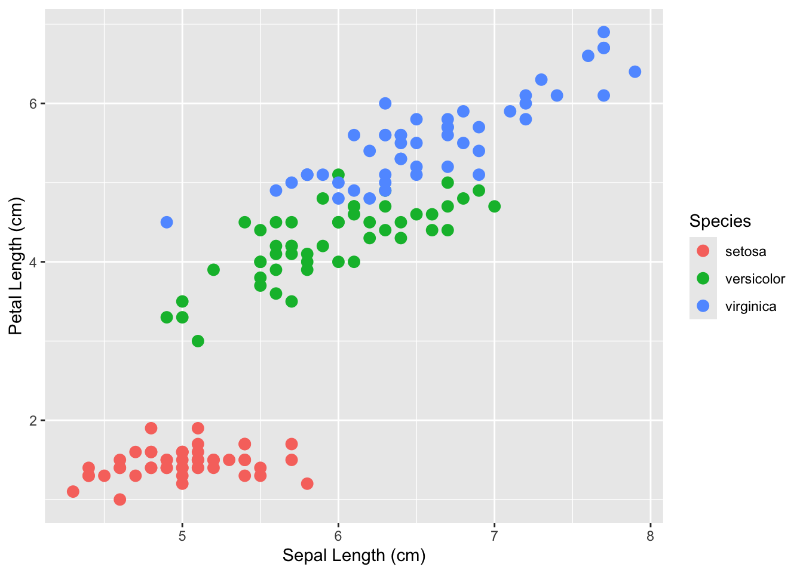
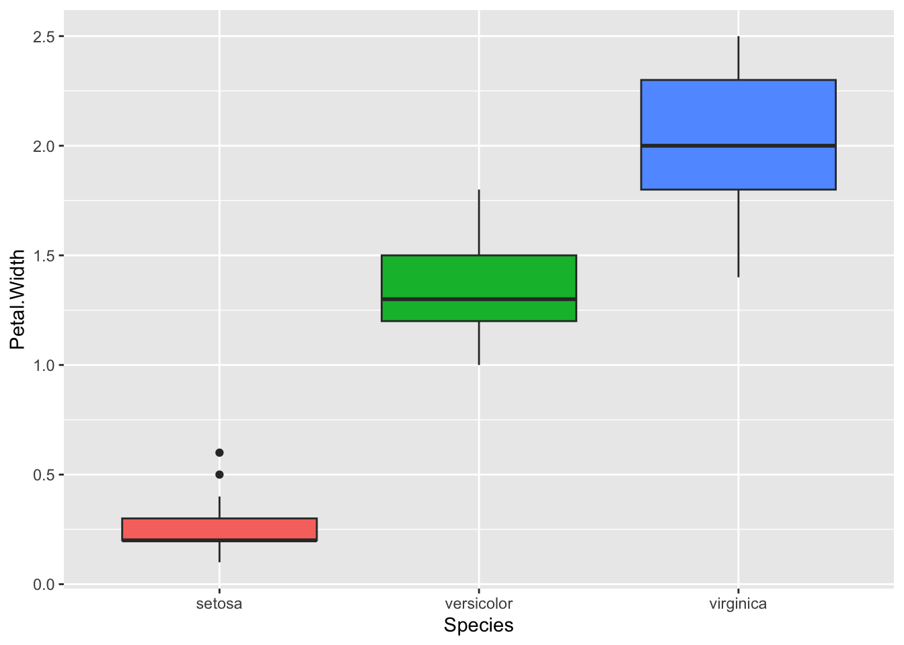
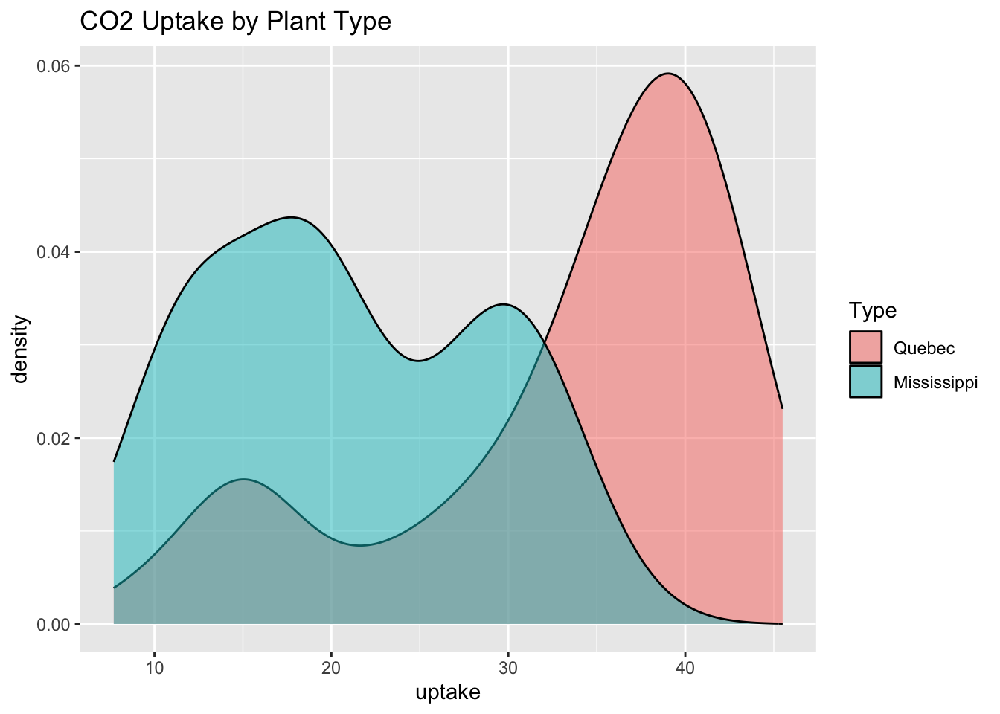
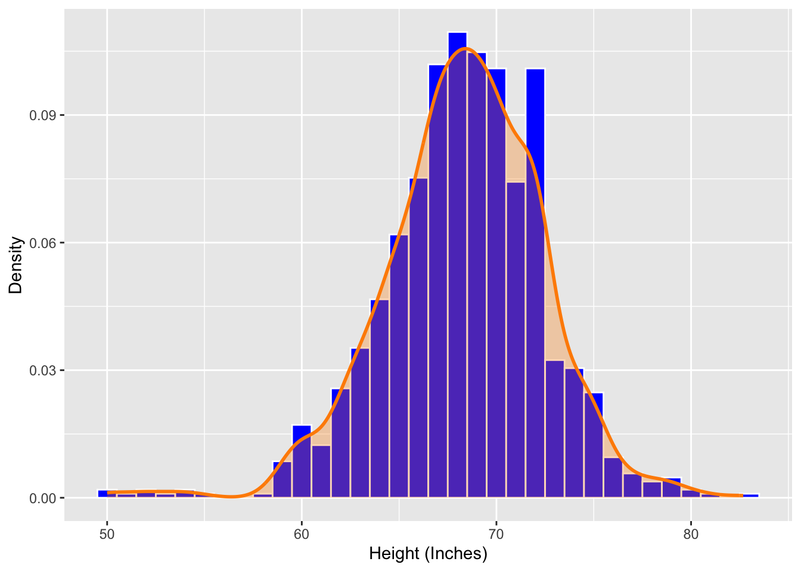

library(ggplot2)
library(dplyr)
Attaching package: 'dplyr'The following objects are masked from 'package:stats':
filter, lagThe following objects are masked from 'package:base':
intersect, setdiff, setequal, unionlibrary(dslabs)ggplot
library(ggplot2)
library(dplyr)
Attaching package: 'dplyr'The following objects are masked from 'package:stats':
filter, lagThe following objects are masked from 'package:base':
intersect, setdiff, setequal, unionlibrary(dslabs)ggplot2.The first step is to pipe in the data that you are planning on using to make your chart.
Use the aes function to assign x and y and add any aesthetics you would like applied globally to your chart.
use geom_* to specifiy what kind of chart you would like to create using ggplot2.
Create a scatterplot using data built into R called iris. Put sepal length on the x-axis and petal length on the y-axis. Color the points by species and made them moderately large. Lastly, label the x and y-axis.
data("iris") # Load the datasetPretty_Flowers <- iris %>%
ggplot(aes(x = Sepal.Length, y = Petal.Length, color = Species)) +
geom_point(size = 3) +
xlab("Sepal Length (cm)") +
ylab("Petal Length (cm)")class(Pretty_Flowers) # Not sure why we included this function?[1] "ggplot2::ggplot" "ggplot" "ggplot2::gg" "S7_object"
[5] "gg" Pretty_Flowers
It appears that as Sepal Length increases for both Versicolor and Viginica that Petal Length also increases. This same trend cannot be seen with the Setosa.
Create a boxplot using the iris dataset and store it as an object called Petal_Spread. Species on the x-axis and petal width on the y-axis. Fill each box with a different color by species but remove the legend.
Petal_Spread <- iris %>%
ggplot(aes(Species, Petal.Width, fill = Species)) +
geom_boxplot(show.legend = FALSE)Needed to correct the above code chunk and change color to fill.
class(Petal_Spread)[1] "ggplot2::ggplot" "ggplot" "ggplot2::gg" "S7_object"
[5] "gg" Petal_Spread
Create a density plot using the CO2 dataset and store it as `CO2_graph. CO2 uptake should be on x-axis. Plant type to define smooth curves so that each plant as it’s own colored curve however make it transparent. Add a title.
data("CO2") # Load Dataset
?CO2unique(CO2$Plant) [1] Qn1 Qn2 Qn3 Qc1 Qc2 Qc3 Mn1 Mn2 Mn3 Mc1 Mc2 Mc3
12 Levels: Qn1 < Qn2 < Qn3 < Qc1 < Qc3 < Qc2 < Mn3 < Mn2 < Mn1 < ... < Mc1CO2_Graph <- CO2 %>%
ggplot(aes(uptake, fill = Type)) +
geom_density(alpha = 0.5) +
ggtitle("CO2 Uptake by Plant Type")
CO2_Graph
The overlap suggests that some of the plants from Quebec and Mississippi took up similar amount of CO2 however Quebec plants appeared to uptake more CO2 than Mississippi plants.
Create a graph from the heights dataset and save as Tall_Density. Height should be on the x-axis. Create a histogram that are 1 inch wide and filled with blue and have white boarders. Scale the histogram so it shows density and not raw counts, on top add a density curve that shows the overall shape of the distribution using a Dark Orange line and fill under the curve with the same color and add transparency. Label the x-axis “Height (Inches)” andn y-axis “Density”.
data("heights") # Load the Data
?heights # Inspect the Data
head(heights) sex height
1 Male 75
2 Male 70
3 Male 68
4 Male 74
5 Male 61
6 Female 65Tall_Density <- heights %>%
ggplot(aes(x = height)) +
geom_histogram(aes(y = after_stat(density)),
binwidth = 1,
fill = "blue",
color = "white") +
geom_density(color = "darkorange",
fill = "darkorange",
alpha = 0.3,
linewidth = 1) +
xlab("Height (Inches)") +
ylab("Density")Instead of on line 86 using y = I used position. This produced an error and I had to consult AI. I used boisestate.ai and the Intro to R tutor for help. It helped me understand that when I am trying to replace the y-axis with density instead of count I use y =.
class(Tall_Density)[1] "ggplot2::ggplot" "ggplot" "ggplot2::gg" "S7_object"
[5] "gg" Tall_Density
Had to correct on line 86 that y = after_stat requires aes() to function properly. Consulted AI for assiatnce.
head(heights) sex height
1 Male 75
2 Male 70
3 Male 68
4 Male 74
5 Male 61
6 Female 65nrow(heights)[1] 1050The density curve shows that the distribution of the data is unimodal with a mean roughly in the high sixties. The added density curve makes it easier to see the distribution.
A Density curve is helpful with continuous data that doesn’t really have fixed categories. This is a lot of different types of data such has height where there can be almost infinate amount of variations and therefore when using histogram you have to bin heights with other similar heights. Histograms are helpful with data that only has a few categories.